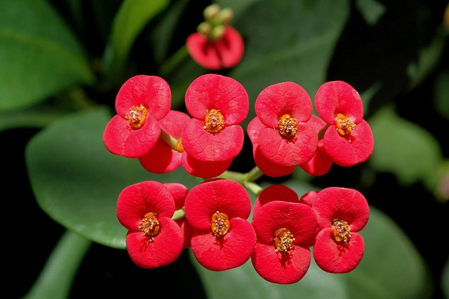

क्राउन ऑफ थॉर्न्सCrown of Thorns
Euphorbia milii · Euphorbiaceae · FLR-0348

- Scientific name वैज्ञानिक नाम
- Euphorbia milii Des Moul.
- Family कुल
- Euphorbiaceae
- Hindi हिंदी
- क्राउन ऑफ थॉर्न्स
- Local names स्थानीय नाम
- crown of thorns, kantedar euphorbia, euphorbia milii, christ plant, kanta jhad
- Status here यहाँ की स्थिति
- cultivated
- Movement आवागमन
- Resident, here all year
- Known from कहाँ दर्ज
- Others have published records from the wider Awadh–Purvanchal plain, none yet from Basti–Ayodhya अवध–पूर्वांचल से दूसरों के प्रकाशित अभिलेख, बस्ती–अयोध्या से अभी नहीं
- IUCN IUCN
- not evaluated
- Review समीक्षा
- not yet reviewed
When to look कब देखें
Present all year. साल भर मौजूद।
Tell it apart from इनसे अलग पहचानें
क्राउन ऑफ थॉर्न्स / Crown of Thorns
Euphorbia milii Des Moul. — Euphorbiaceae
क्राउन ऑफ थॉर्न्स — बागीचों, गमलों और दीवारों की मेड़ों पर लगाई जाने वाली एक कांटेदार, गूदेदार और सदाबहार झाड़ी। इसे 'कांटेदार यूफोर्बिया' भी कहते हैं। इसके तने पर ढेरों लंबे और तीखे कांटे होते हैं, जबकि इसके सिरों पर चमकीले लाल या गुलाबी रंग की दो गोल पंखुड़ियों जैसे ब्रैक्ट्स के बीच नन्हे पीले फूल खिलते हैं। तोड़ने पर इसमें से गाढ़ा जहरीला दूध निकलता है।
Quick Identification त्वरित पहचान
| Feature | Description |
|---|---|
| Habit | Spiny, sprawling, succulent woody shrub with abundant acrid white latex |
| Stems | Ridged, greyish-brown, heavily armed with sharp straight grey thorns |
| Leaves | Obovate to spathulate, bright green, fleshy, clustered near branch tips |
| Cyathia | Subtended by two prominent, petal-like, brilliant scarlet-red or pink cyathophylls |
| Latex | Copious, milky, caustic white sap exuded instantly upon bruising |
Field tip: Look in sunlit garden pots or along low boundary walls for a thick grey-stemmed shrub armed with needle-sharp spines, crowned by pairs of vibrant scarlet petal-like bracts.
हिंदी — कैसे पहचानें: तीखे कांटों से भरा तना, चमकीले लाल रंग के दो पंखुड़ियों जैसे ब्रैक्ट्स, और तोड़ने पर गाढ़ा सफेद दूध।
Morphology आकारिकी
Shrub description: Semi-prostrate or erect, succulent, spiny woody shrub. Stems cylindrical or obscurely five-angled, branching from base, bark dull grey-brown; densely armed with sharp, straight, rigid, spine-like stipules arranged spirally along the ridges. Leaves alternate, obovate to oblanceolate or spathulate, apex obtuse with a mucro, tapering to a sessile base, fleshy, glabrous, bright green, restricted mainly to the younger growing branch tips, falling readily during extreme drought. Inflorescence a terminal dichotomous cyme on a long peduncle. Cyathia flanked by two conspicuous, spreading, broadly ovate, subcordate, petal-like bracts (cyathophylls) of vivid scarlet-red, pink, or yellow. Involucre small, campanulate, bearing five glandular lobes. Latex milky, thick, caustic.
हिंदी: यह एक कांटेदार गूदेदार झाड़ी है।
Behaviour & Ecology व्यवहार और पारिस्थितिकी
- Succulent Xerophytism: Stores water in thick fleshy stems, surviving months of severe neglect and drought without wilting.
- Year-Round Blooming: Opens cyathia throughout all twelve months, providing steady nectar even during the hottest pre-monsoon weeks.
- Chemical Defence: High concentrations of phorbol esters and diterpenes in the milky sap protect it from mammalian grazing.
- Pollinator Generalist: The exposed golden nectar glands of the cyathium reward diverse flies, solitary bees, wasps, and ants.
हिंदी: यह बिना पानी के महीनों तक जीवित रह सकती है। इसका दूध जहरीला होता है जिससे जानवर इसे नहीं खाते। यह पूरे साल फूल देती है।
Life Cycle / Phenology जीवन चक्र
- Evergreen Flowering: Produces successive pairs of scarlet cyathial bracts continuously through the year.
- Leaf Shedding: Drops older lower leaves in response to winter chill or extreme dry heat, concentrating greenery at tips.
- Fruit Capsule: Three-lobed capsule forms rarely in cultivation, ripening and splitting into three small seeds.
- Stem Propagation: Cuttings dried for a couple of days root with extreme ease when inserted into sandy soil.
हिंदी: यह साल भर खिलती रहती है। टहनी को काटकर दो दिन सुखाने के बाद मिट्टी में लगाने से नया पौधा आसानी से उग जाता है।
Associated Species / Interactions संबंधित प्रजातियाँ
- Flower Visitors: Visited for nectar by hoverflies (Syrphidae), sweat bees (Lasioglossum), and small pierid butterflies.
- Refuge for Small Fauna: Thorny branches provide cat-proof nesting and resting perches for geckos and house sparrows near peepal groves.
- Soil Tolerances: Thrives in nutrient-poor sandy soils and brick rubble where few other ornamentals survive.
हिंदी: मक्खियां और नन्हीं मधुमक्खियां इसका रस पीती हैं। इसके कांटे छिपकलियों को बिल्ली से सुरक्षा देते हैं।
Pests and Diseases कीट और रोग
- Mealybugs: Cryptic mealybugs (Ferrisia) hide between sharp spine bases and suck plant sap.
- Stem Rot: Overwatering during cold winter spells can cause fungal stem rot (Fusarium) at soil level.
- Spider Mites: Red spider mites colonize undersides of leaves during dry dusty pre-monsoon heat.
हिंदी: कांटों के बीच कभी-कभी सफेद मिलीबग छिप जाते हैं और अधिक पानी देने पर तना सड़ने लगता है।
Agricultural / Human Relevance कृषि प्रासंगिकता
- Living Protective Barrier: Grown along low boundary walls and terrace borders as an impenetrable deterrent against intruders and dogs.
- Hardy Ornamental: One of the most durable, low-maintenance potted ornamentals across rural and urban Uttar Pradesh.
- Medicinal Caution: The milky sap is an irritant to skin and eyes; handled with care by gardeners.
हिंदी: इसे दीवारों और बागीचों में सुरक्षा बाड़ के रूप में लगाया जाता है। इसके दूध से आंखों और त्वचा में जलन हो सकती है।
Expected Locally स्थानीय रूप से अपेक्षित
Not a field record. Written from published accounts for eastern Uttar Pradesh. No confirmed local sighting yet — if you have seen it, that is what the atlas needs.
अभी तक स्थानीय पुष्टि नहीं। यह विवरण प्रकाशित स्रोतों से है, किसी अवलोकन से नहीं।
Expected in scrubby wastelands, village hedgerows, and garden borders across Basti, Ayodhya, and neighbouring Awadh districts. GBIF holds published records from the wider Awadh–Purvanchal plain, none yet from Basti–Ayodhya. To confirm this species for the Atlas, provide a clear photograph showing flowers, leaves, and habit, along with date, time, and specific location.
Distribution वितरण
Global range: Native to Madagascar; cultivated pantropically as an ornamental across warm temperate and tropical regions.
In India: Planted in gardens, verandas, cemeteries, and parks across every state and union territory.
In Uttar Pradesh: Ubiquitous in domestic potted collections, temple boundaries, and road dividers in Lucknow, Varanasi, and Ayodhya.
In Basti district / eastern UP: Expected on village veranda ledges, primary health centre borders, and school gardens throughout Basti.
हिंदी: यह मेडागास्कर का मूल पौधा है जो अब भारत के हर शहर और गांव के बागीचों में सामान्य रूप से उगाया जाता है।
Research Questions शोध प्रश्न
- Which syrphid fly species serves as the most frequent diurnal nectar consumer on Euphorbia milii in Basti? / बस्ती में कौन सी मक्खी इसके फूलों से सबसे अधिक मकरंद इकट्ठा करती है?
- How does soil gravel content influence stem succulent diameter and spine elongation? / पथरीली मिट्टी का इसके तने के गूदेदार आकार और कांटों की लंबाई पर क्या प्रभाव पड़ता है?
- What is the minimum irrigation frequency required to maintain full leaf retention during peak summer heat? / गर्मियों में पत्तियों को गिरने से बचाने के लिए कितने दिनों में पानी देना आवश्यक है?
- How do local jumping spiders utilize the spiny architecture as an ambush hunting territory? / कूदने वाली मकड़ियां शिकार करने के लिए इसके कांटों का सहारा कैसे लेती हैं?
- Does planting Euphorbia milii around vegetable beds deter rodent burrowing activity? / क्या सब्जियों की क्यारियों के चारों ओर इसे लगाने से चूहों का प्रकोप कम होता है?
Similar Species मिलती-जुलती प्रजातियाँ
| Species | How to tell apart | हिंदी |
|---|---|---|
| Euphorbia tithymaloides | Zig-zag thornless stems with slipper-shaped red floral bracts | टेढ़े-मेढ़े बिना कांटों वाले तने, जूते जैसे लाल फूल |
| Euphorbia neriifolia | Giant succulent tree-shrub with stout 5-angled winged spiny branches | बड़ा पेड़ जैसी झाड़ी, चौड़े पांच कोण वाले तने |
| Euphorbia tirucalli | Pencil-like smooth cylindrical green branches completely devoid of thorns | पेंसिल जैसी चिकनी हरी टहनियां, कोई कांटे नहीं |
Field rule: A low succulent shrub with grey spiny stems, obovate leaves near tips, and pairs of bright scarlet-red rounded floral bracts with milky sap identifies Euphorbia milii.
Taxonomy & Classification वर्गीकरण
Original description. Described by Charles des Moulins in 1826 as Euphorbia milii in Bulletin d'Histoire Naturelle de la Société Linnéenne de Bordeaux, vol. 1, p. 27.
Subspecies. Euphorbia milii var. splendens (Bojer ex Hook.) Ursch & Leandri is the large-flowered variety most commonly grown.
Family and order placement. Placed in the family Euphorbiaceae (spurge family), subfamily Euphorbioideae, in the order Malpighiales.
IUCN status rationale. Not evaluated on the IUCN Red List; abundant globally in cultivation and secure.
हिंदी: चार्ल्स डेस मौलिन्स ने 1826 में इसका वैज्ञानिक विवरण दिया था। यह यूफोर्बिएसी कुल का पौधा है।
Photo Gallery फोटो गैलरी
No photos yet — add field photos to media/species/crown_of_thorns/ and run node scripts/sync_photos.js.
Photos needed आवश्यक फोटो
- [ ] Pair of bright scarlet petal-like bracts surrounding yellow cyathium (पीले फूल के साथ चमकीले लाल ब्रैक्ट्स)
- [ ] Sharp spines along thick grey succulent stem (मोटे गूदेदार तने पर तीखे कांटे)
- [ ] Bushy potted plant showing flowers and leaves clustered at tips (गमले में फूलों से लदी पूरी झाड़ी)
References संदर्भ
- Des Moulins, C. (1826). Bulletin d'Histoire Naturelle de la Société Linnéenne de Bordeaux, vol. 1, p. 27.
- Duthie, J.F. (1915). Flora of the Upper Gangetic Plain and of the Adjacent Siwalik and Sub-Himalayan Tracts, vol. 3, p. 76. Government of India, Calcutta.
- Hooker, J.D. (1887). The Flora of British India, vol. 5, p. 255. L. Reeve & Co., London.
- Brandis, D. (1906). Indian Trees: An Account of Trees, Shrubs, Woody Climbers, Bamboos and Palms, p. 558. Archibald Constable & Co., London.
- Kirtikar, K.R. & Basu, B.D. (1935). Indian Medicinal Plants, vol. 3, p. 2201. Lalit Mohan Basu, Allahabad.
- GBIF Occurrence Data — Euphorbia milii Des Moul., India (2025).
Source file: species/flora/shrubs/crown_of_thorns.md